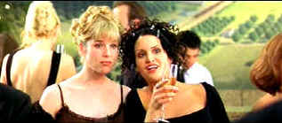

| Nurse
Betty (SE)/B+,B |
| USA Films/2000/110/ANA 2.35 |
Nurse Betty is often a hoot. Director Neil LaBute treats comedy like
a marvelous confection, doled out in sensible portions carefully measured to deliver the most from
the raw material.
Part road movie, part soap satire, Nurse Betty manages to juggle the bits
and pieces with surgical precision. The dark comedy gets out of hand here and there, but I found
the movie highly original and a pleasure to watch almost every minute. There is some questionable
violence that sets Betty on her cross country journey; perhaps it was necessary, but I have to
admit, it was disgusting. LaBute edits the scene with quick and merciful cuts minimizing the blood.
 |
| Betty eyeballs her fantasy up close.
©USA |
Betty lives a rather bland existence in small town Kansas, pouring
coffee with practiced aplomb at a local greasy spoon and tolerating a philandering used car dealer
husband. The soap opera A Reason to Love gives Betty her big lift. Her crush on star
character Dr. David Ravell is joyfully acknowledged by her friends and coworkers. But something in
the car lot will change everything for Betty.
Renee Zellweger does Betty with a convincingly charming directness. The
actress gets away with some simplistic saccharine posturing through a belief in her own innocence.
The casting is marvelous from Betty on down to her new found Los Angeles friend Rosa played with
wide-eyed skepticism by Tia Texada. Partnering the sublime Morgan Freeman with the abrasive Chris
Rock as a pair of hit men trying to complete their assignment works wonders for Nurse Betty.
Greg Kinnear, as soap dreamboat George McCord cum Dr. David Ravell, is effectively obnoxious and
trusting, brilliantly baffled by the incredible acting focus of Betty. Some act! LaBute regular
Aaron Eckhart has some fun with Betty husband Del and Crispin Glover and Taylor Pruitt Vince never
do give up as a pair of locals with a keen interest in Betty.
Thanks for the special edition treatment gang. Despite your doubts Morgan,
listening to cast and crew shed additional light on the magic of Nurse Betty. Listening to comments
of director LaBute, stars Freeman, Zellweger, Rock and Kinnear is always entertaining and their own
pleasure is returning to the experience of making Nurse Betty is evident. A second audio
commentary gets more technical with LaBute and members of the crew. A number of deleted scenes are
also included as well as segments of the soap A Reason to Live.
Nurse Betty dresses up in her DVD uniform in immaculate taste. Save for a
couple of slightly soft scenes, Nurse Betty looks great. Color saturation is robust and
accurate. Skin tones cover a wide range naturally. Deep blacks never mask detail. Strong contrast
range gives the picture excellent theatrical sheen. Shadow detail is good. Overall depth of image
is excellent. Sound ambiance is well captured on the Dolby Digiital 5:1 tracks.
|
|
|
|

Selections from the feature archive include articles on
Akira Kurosawa, Frank
Darabont, Blonde Bimbos, Hollywood Street Gangs, or Vietnam: The
Hollywood Pariah, and many more....

Tilting at Hollywood
He's part of the dynamic duo that restored Lawrence
of Arabia, Spartacus, My Fair Lady and Vertigo. Harris rides a white horse into the for the cause
of preserving our film legacy. Click on the image to read more.

The
Movie Poster Archive includes extensive poster images from the films of stars like Susan Hayward,
Kirk Douglas, Katharine Hepburn and many more. Our featured star is Doris Day.


The National Film Preservation Foundation (NFPF) is the nonprofit organization created by the U.S. Congress to save
America's film heritage.

News, information, features about current films in theaters and in the
pipeline. Easy to use interface.

The DVD Forum is an international association of hardware
manufacturers, software firms and other users of Digital Versatile Discs (the "DVD
Format"), created for the purpose of exchanging and disseminating ideas and information about
the DVD Format and its technical capabilities, improvements and innovations.
|